Rina Bao
Harvard Medical School and Boston Children's Hospital
rina.bao@childrens.harvard.edu | Google Scholar
Landmark Center, 401 Park Drive, Boston, MA 02115, USA
Summarization
I am a postdoctoral researcher at Harvard Medical School and Boston Children's Hospital. My research integrates brain MRI and clinical data to develop AI solutions for early diagnosis and prognosis, with a focus on multimodal learning, clinically grounded AI systems, and foundation models for medical reasoning. I organized the Boston Neonatal Brain Injury Dataset for Hypoxic Ischemic Encephalopathy (BONBID-HIE) Challenges and Workshops at MICCAI 2023–2024, establishing neonatal brain injury benchmarks that attracted 300+ participants and generated over 2,000 dataset downloads from more than 15 countries across six continents, including North and South America, Europe, Asia, Africa, and Australia. I have published in leading venues such as ICML, MICCAI, ISBI, Scientific Data, Medical Image Analysis, IEEE Journal of Selected Topics in Signal Processing, and npj Computational Materials, and I have received the Thrasher Research Fund Early Career Award. My long-term goal is to advance trustworthy, clinically integrated AI systems that transform pediatric healthcare and beyond.
Research Grants Awarded
Thrasher Research Fund Early Career Award ($26,750)
Development of neuroimaging biomarkers for 2-year neurocognitive outcomes in mild neonatal brain injury
Charles A. King Trust Postdoctoral Research Fellowship ($206,200)
Development of neuroimaging biomarkers for 2-year neurocognitive outcomes after neonatal brain injury
Work Experiences & Education
Postdoc, Harvard Medical School & Boston Children's Hospital, USA (2021.11-Present)
Working with Prof. P. Ellen Grant and Prof. Yangming Ou at Harvard Medical School.
Ph.D. in Computer Science, University of Missouri-Columbia, USA
Advisor: Prof. Kannappan Palaniappan
B.Eng. in Communication Engineering, Tianjin University, China
Neonatal Brain Injury Challenges
-
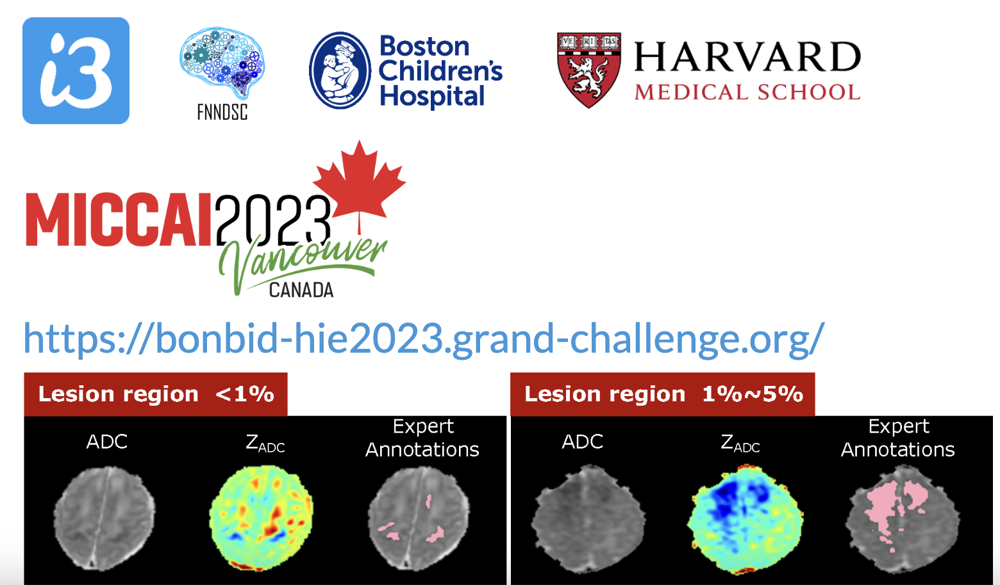
1st BOston Neonatal Brain Injury Dataset for Hypoxic Ischemic Encephalopathy (BONBID-HIE) Lesion Segmentation Challenge and Workshop, MICCAI 2023
-
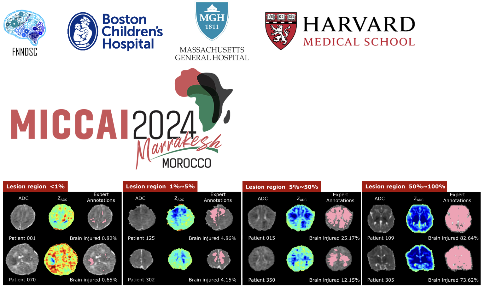
2nd BOston Neonatal Brain Injury Dataset for Hypoxic Ischemic Encephalopathy (BONBID-HIE) Lesion Segmentation and Outcome Prediction Challenge and Workshop, MICCAI 2024
Publication and Preprints
Selected Publications
-
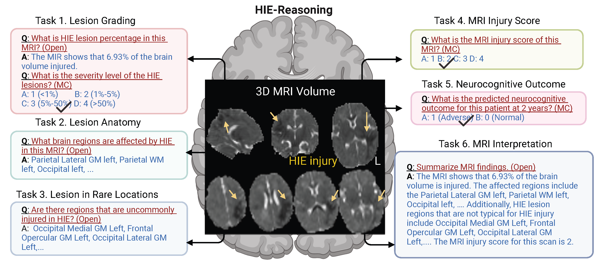
Bao, R., et al. "Visual and Domain Knowledge for Professional-level Graph-of-Thought Medical Reasoning" International Conference on Machine Learning (ICML), 2025, Spotlight (Rate 2.6%)
-
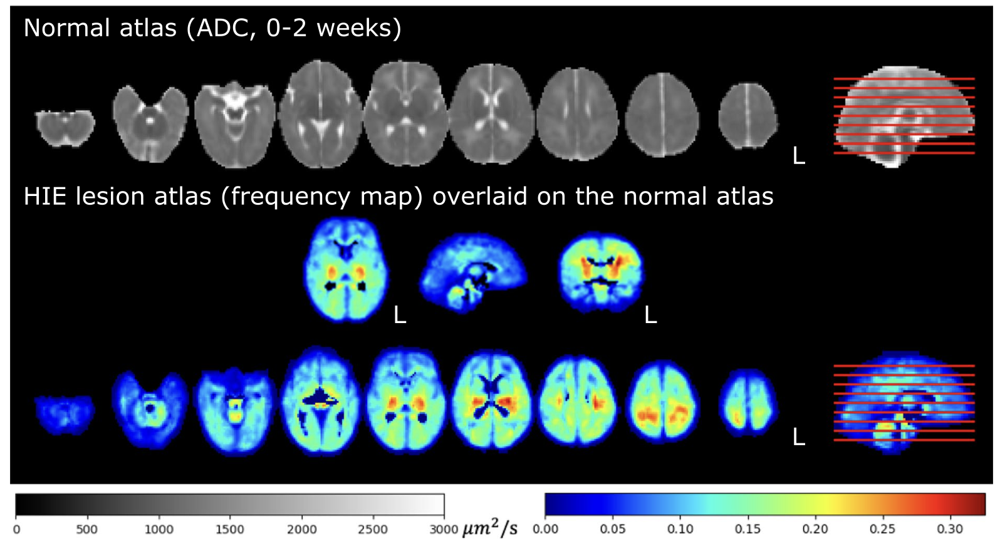
Bao, R., et al. "BOston Neonatal Brain Injury Data for Hypoxic Ischemic Encephalopathy (BONBID-HIE): I. MRI and Lesion Labeling", Scientific Data 12.1 (2025): 53. (Impact Factor: 8.7)
-
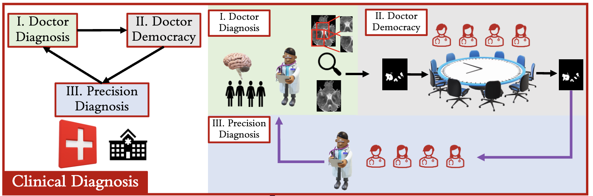
Bao, R., et al. "PARADISE: Personalized and regional adaptation for HIE disease identification and segmentation", Medical Image Analysis, Volume 102, 2025, 103419, https://doi.org/10.1016/j.media.2024.103419 (Impact Factor: 11.8).
-
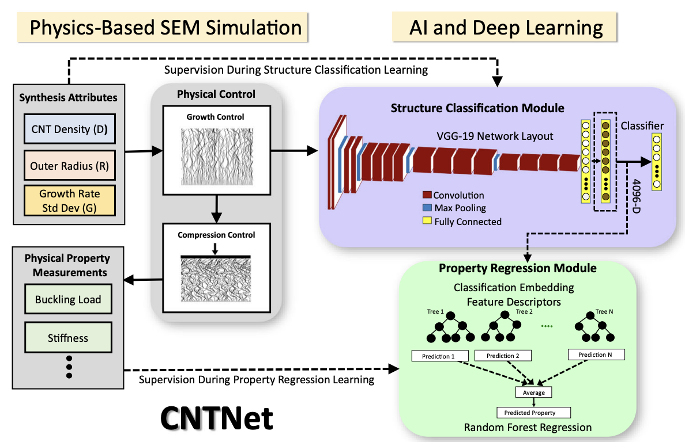
Hajilounezhad, T.*, Bao R.*, et al. "Predicting carbon nanotube forest attributes and mechanical properties using simulated images and deep learning", Npj Computational Materials 7 (1), 134, 2021 (* equal contribution) (Impact Factor: 13.0)
-
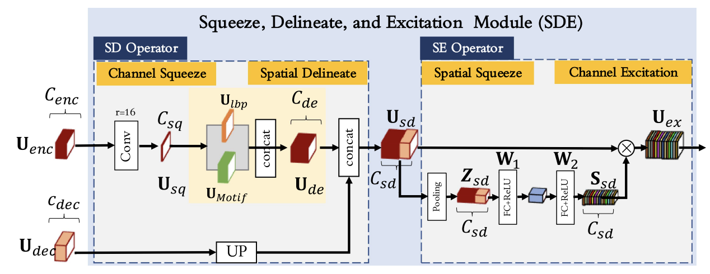
Bao, R., et al."Lightweight SDE-Net Fusing Model-Based and Learned Features for Computational Histopathology", IEEE Journal of Selected Topics in Signal Processing (IEEE JSTSP), vol. 18, no. 6, pp. 1123-1137, Sept. 2024, doi: 10.1109/JSTSP.2024.3470312. (Impact Factor: 13.7)
-
 Bao, R., et al."AGE2HIE: Transfer Learning from Brain Age to Predicting Neurocognitive Outcome for Infant Brain Injury", ISBI, 2025.
Bao, R., et al."AGE2HIE: Transfer Learning from Brain Age to Predicting Neurocognitive Outcome for Infant Brain Injury", ISBI, 2025. -
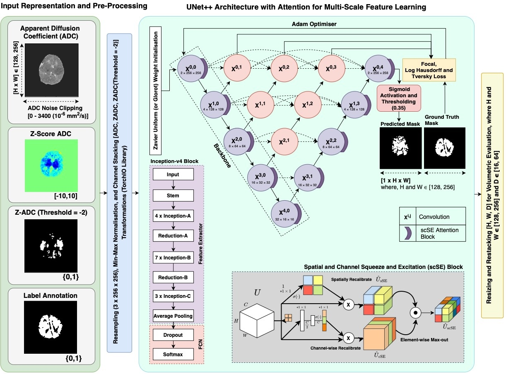
Rao, A., ..., Bao, R.†, "Spatial Prior-Guided Boundary and Region-Aware 2D Lesion Segmentation in Neonatal Hypoxic Ischemic Encephalopathy", MICCAI, 2025 († Corresponding Author)
-
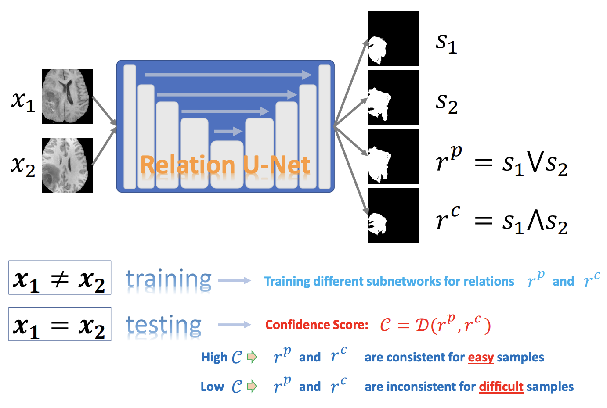
He, S., Bao, R., et al."Relation U-Net", ISBI, 2025.
-
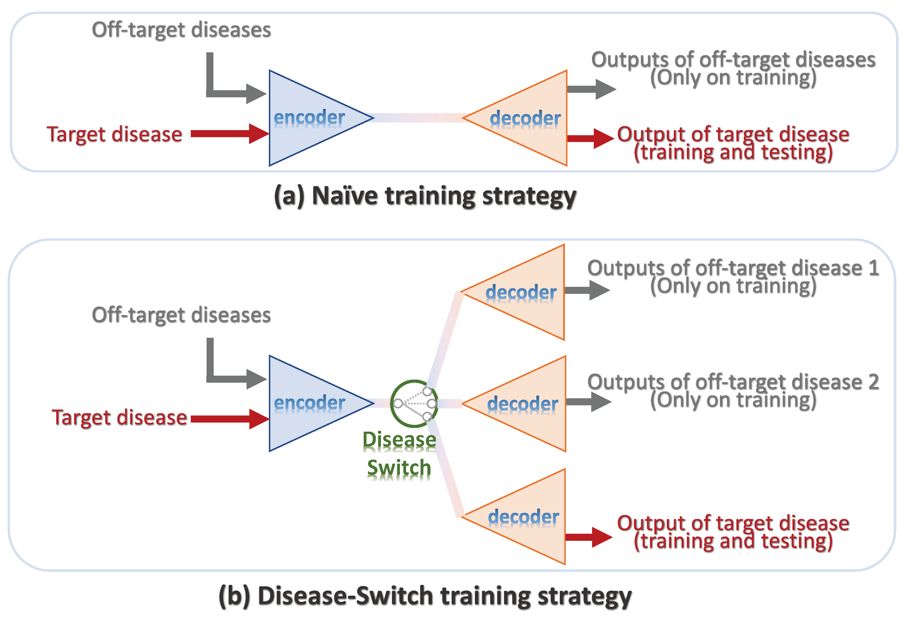
Li, J., He, S., Bao, R., et al."Using Off-Target-Disease Data to Improve Target-Disease Lesion Segmentation", ISBI, 2025.
-
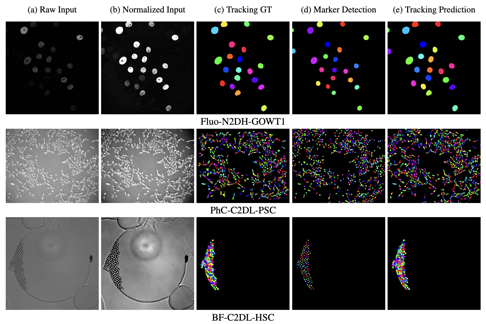
Bao, R., et al. "DMNet: Dual-stream marker guided deep network for dense cell segmentation and lineage tracking", ICCV Workshop (Best Paper), 2021
Peer-Reviewed Conference Abstracts
-
Ou, Y., Kesri, A., Bao, R., et al. "Combining 47 clinical and neuroimaging variables to predict adverse 18-22-month outcomes for Hypoxic Ischemic Encephalopathy in Neonatal Research Network trials", Pediatric Academic Societies Meeting (PAS) 2025
-
Bao, R., Kesri, A., et al. "2-Year Neurocognitive Outcome Prediction of Hypoxic Ischemic Encephalopathy in Neonates with Brain MRIs", SPR (PAS) 2025
-
Bao, R., et al. "Maternal Dietary Nutrition Interact With Demographic and Socioeconomic Information To Impact Offspring Neurocognition by Early School Age", Nutrition 2023
-
Kesri, A., Bao, R., et al. "The role of expert MRI scores in predicting adverse 18-22-month outcomes for Hypoxic Ischemic Encephalopathy in Neonatal Research Network trials", Annual Meeting of American Society of Pediatric Neuroradiology (ASPNR) 2025
Professional Activities
- Editor for LNCS proceedings "AI for Brain Lesion Detection and Trauma Video Action Recognition", First BONBID-HIE Lesion Segmentation Challenge and First Trauma Thompson Challenge, Held in Conjunction with MICCAI 2023, Vancouver, BC, Canada, October 16 and 12, 2023, Proceedings
- Bao, R., et al. Book Chapter "Linking Deep Learning, MRI to Brain Disorders" in "Handbook of the Biology and Pathology of Mental Disorders" In: Martin, C.R., Preedy, V.R., Patel, V.B., Rajendram, R. (eds) Handbook of the Biology and Pathology of Mental Disorders. Springer, Cham. https://doi.org/10.1007/978-3-031-32035-4_55-1
- Organizer for the Challenges and Workshops of 1st and 2nd BONBID-HIE for HIE Lesion Segmentation and Outcome Prediction in conjunction with the International Medical Image Computing and Computer Assisted Intervention Conference (MICCAI) 2023 and MICCAI 2024, engaging over 300 participants worldwide.
- Reviewers for CVPR, MICCAI, Frontiers in Neuroscience, Scientific Reports, Pattern Recognition, IEEE Transactions on Biomedical Engineering, IEEE Transactions on Neural Networks and Learning Systems, and others.
Internship
Microsoft Research Asia | Intelligent Multimedia Group | 2018
Teaching Experience
Teaching Assistant, Department of Electrical Engineering and Computer Science, University of Missouri-Columbia
- CMP_SC 3050: Advanced Algorithm Design (>80 undergraduate students) - Fall 2016
- CMP_SC 4850/7850: Computer Networks I (>50 undergraduate & graduate students) - Spring 2016
Awards & Honors
- Nomination for Rising Star in Healthcare, Boston Children's Hospital - 2025
- Best Paper, ICCV Computer Vision for Automated Medical Diagnosis (CVAMD) Workshop - 2021
- Second Place, ISBI 2021 Cell Segmentation and Tracking Challenge - 2021
- Top Graduate Team Prize, NeurIPS SpaceNet7 Challenge - 2020
- Microchip Technology Scholarship - 2014